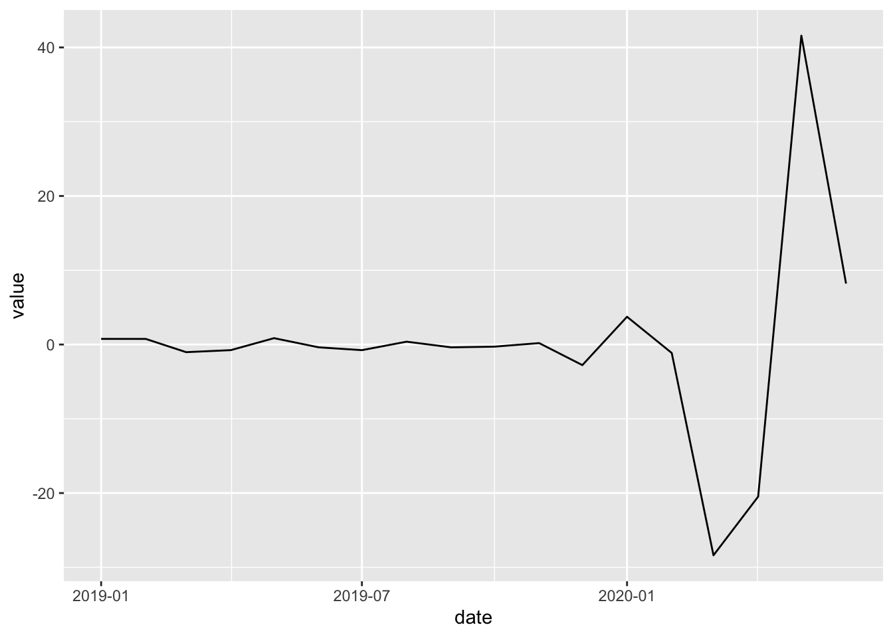
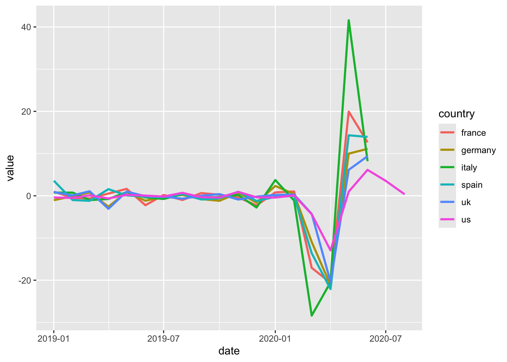
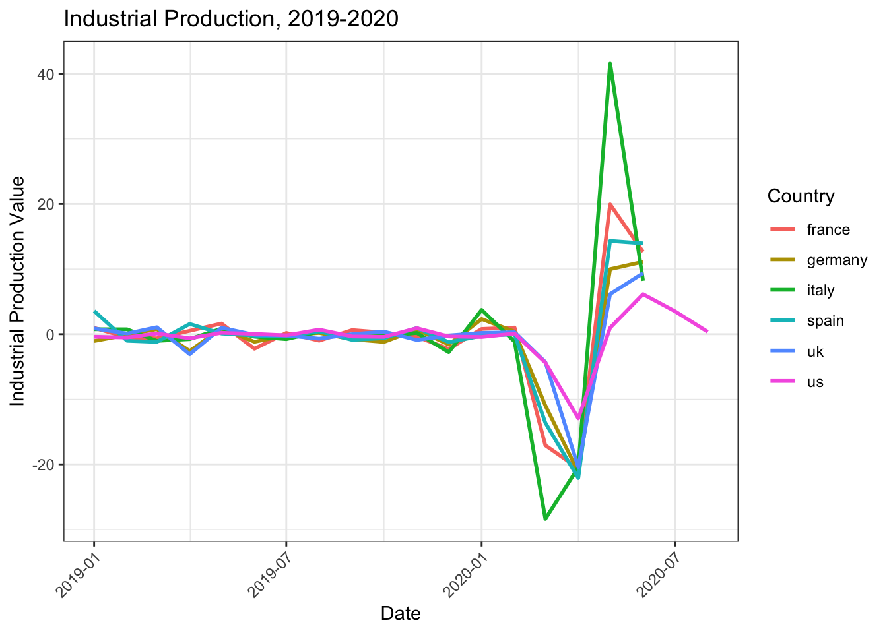

# If you're on macOS or Linux, run:
which R
which git
R --version
quarto check
# If you're on Windows (PowerShell), run:
where R
where git
R --version
quarto checkSeminar 2: Introduction to Data I- Solution
LSE ME314: Introduction to Data Science and Machine Learning
Plan for Today:
We will learn how to process and manipulate data in R using tidyverse and dplyr. We will also start learning data visualization using ggplot.
Recap from Last Seminar:
In your Positron terminal, write the commands below to check that you have installed everything necessary. If any of those commands return an error, go back to yesterday’s seminar code and follow the setup instructions.
Recap from last Seminar: Data Types in R
1. Exercise
Create a data frame with three R vectors. In a single R code chunk, write code that:
Creates a numeric vector called numeric_var containing the values 1,2,3.
Creates a character vector called character_var containing the strings “data”, “code”, and “programming”.
Creates a factor called factor_vector from the character vector c(“data”, “code”, “programming”).
Combines the three vectors into a data frame called df using the code: `data.frame(var_name1, var_name2, var_name3) and print the data frame
# your code goes here
numeric_var <- c(1, 2, 3)
character_var <- c("data", "code", "programming")
factor_var <- as.factor(character_var)
df <- data.frame(numeric_var, character_var, factor_var)
print(df) numeric_var character_var factor_var
1 1 data data
2 2 code code
3 3 programming programmingPart I: Processing and Manipulating Data in R
In R, the go-to package for data wrangling and manipulation is tidyverse and dplyr. Dplyr works with a pipe operator |>. It pipes an object as the first argument into a subsequent function. This is an alternative notation to writing the object as the first input in the function directly.
We will be working with two main packages for this seminar: dplyr and tidyr. Both come as part of the tidyverse, so they are already loaded.
Dplyr
Dplyr is the tidyverse package for data manipulation. It offers a collection of functions, so-called verbs, that cover the most common data manipulation tasks for tabular data.
Functions:
filter()andmutate(), which creates new variablesgroup_by()andsummarise(), which aggregate values by groups
Tidyr
Tidyr is the tidyverse package for reshaping tabular data, such as transforming datasets between wide and long format.
Functions:
pivot_wider(): transforms data from long to wide formatpivot_longer(): transforms data from wide to long format
2. Exercise
Set up your R workspace by installing and loading packages. We will be using the ‘tidyverse’ package in this session. Import the dataset in the data folder ‘ip_and_unemployment.csv’ in R using tidyverse.
Install the tidyverse package. You will be asked to select a CRAN mirror which should pop up as a separate window or below in your R terminal. Select the one in UK:London.
install.packages("tidyverse")library(tidyverse)Import the ip_and_unemployment.csv dataset using R code, which you find in the data folder of the seminar2 folder using read.csv() and call it ip_and_unemployment. Then print out the first rows of the dataset using head()
ip_and_unemployment <- read.csv("data/ip_and_unemployment.csv")
head(ip_and_unemployment) country date series value
1 france 01.01.2019 ip 0.97331
2 france 01.01.2019 unemployment 8.70000
3 france 01.02.2019 ip -0.49628
4 france 01.02.2019 unemployment 8.70000
5 france 01.03.2019 ip -0.63303
6 france 01.03.2019 unemployment 8.600003. Exercise
Now, let us start working with the dataset to be able to answer the following questions.
What are the highest unemployment rates for France and Spain during the time of the sample? What are the lowest values for industrial production for the two countries? Make sure to delete NA values in only the time series of interest.
As you could see above when displaying the dataset, it is not in a useful format for us to work with. Therefore, we will change it by following the steps below:
Step 1. Pivot the dataset
Start by pivoting the dataset from long to wide format using pivot_wider(). You want to turn the series column into two separate unemployment and ip columns and call the new dataset ipu_clean.
ipu_clean <- ip_and_unemployment |>
pivot_wider(
id_cols = c("country", "date"),
names_from = "series",
values_from = "value"
) # long to wideStep 2. Compute the extrema
For both countries, France and Spain, write separate code and find the maximum unemployment rate and the minimum industrial-production value in the sample using the filter() function to filter for the correct country and then filter again to get the highest unemployment rate and the lowest industrial production rate using max() and min().
Be sure to drop NA values only when computing each max or min (e.g. via na.rm = TRUE), so that other countries or other dates aren’t affected.
Remember that na.rm = TRUE applies only to the max()/min() call, so you don’t drop entire rows with missing other variables.
# France
ipu_clean |>
filter(country == "france") |>
filter(
unemployment == max(unemployment, na.rm = TRUE) |
ip == min(ip, na.rm = TRUE)
)# A tibble: 3 × 4
country date ip unemployment
<chr> <chr> <dbl> <dbl>
1 france 01.01.2019 0.973 8.7
2 france 01.02.2019 -0.496 8.7
3 france 01.04.2020 -20.6 7.8# Spain
ipu_clean |>
filter(country == "spain") |>
filter(
unemployment == max(unemployment, na.rm = TRUE) |
ip == min(ip, na.rm = TRUE)
)# A tibble: 3 × 4
country date ip unemployment
<chr> <chr> <dbl> <dbl>
1 spain 01.04.2020 -22.1 15.3
2 spain 01.06.2020 14.0 15.8
3 spain 01.07.2020 NA 15.84. Exercise
Add three new columns to the dataframe using the mutate() function
- the square of the industrial production percentage change,
- the natural logarithm of the unemployment rate, and
- the interaction (i.e. the product) of industrial production percentage change and unemployment rate.
ipu_clean |>
mutate(
ip_sq = ip^2,
unemployment_ln = log(unemployment),
ip_unemployment = ip * unemployment
) |>
head()# A tibble: 6 × 7
country date ip unemployment ip_sq unemployment_ln ip_unemployment
<chr> <chr> <dbl> <dbl> <dbl> <dbl> <dbl>
1 france 01.01.2019 0.973 8.7 0.947 2.16 8.47
2 france 01.02.2019 -0.496 8.7 0.246 2.16 -4.32
3 france 01.03.2019 -0.633 8.6 0.401 2.15 -5.44
4 france 01.04.2019 0.521 8.5 0.272 2.14 4.43
5 france 01.05.2019 1.64 8.5 2.70 2.14 14.0
6 france 01.06.2019 -2.24 8.5 5.01 2.14 -19.0 Next, we are creating our own tibble, the tidyverse version of a dataframe, to work with it in this exercise.
CoffeeOrders <- tibble(
Product = c(
"coffee",
"coffee",
"coffee",
"coffee",
"coffee",
"latte",
"latte"
),
Version = c(
"strong",
"strong",
"strong",
"decaf",
"decaf",
"strong",
"decaf"
),
Size = c("small", "large", "large", "small", "small", "large", "small"),
Quantity = c(4, 2, 2, 3, 3, 4, 5)
)
print(CoffeeOrders)# A tibble: 7 × 4
Product Version Size Quantity
<chr> <chr> <chr> <dbl>
1 coffee strong small 4
2 coffee strong large 2
3 coffee strong large 2
4 coffee decaf small 3
5 coffee decaf small 3
6 latte strong large 4
7 latte decaf small 55. Exercise
Your task is to create a summary table showing the total quantity of each coffee type (product and version) ordered in each size. Use group_by() and summarise() to aggregate the quantities, and then tidyr’s pivot_wider() function to transform your data from long format (one row per item) to wide format (coffee types as rows, sizes as columns).
Hints:
group_by()should group by the columns containing the coffee types and the sizessummarise()should be an operation that gives you the total quantitynames_from=should be the column containing the sizesvalues_from=should be the column containing the summarised quantities
The results should be a table where each row is a coffee type, each column is a size, and each cell shows the total quantity ordered.
OrderSummary <- CoffeeOrders |>
group_by(Product, Version, Size) |> # the rows to group by
summarise(Quantity = sum(Quantity), .groups = "drop") |> # the aggregation function to apply
pivot_wider(
names_from = Size, # the column that provides the new column names
values_from = Quantity, # the values to fill the table with
values_fill = 0 # the value to replace missing values with
)
print(OrderSummary)# A tibble: 4 × 4
Product Version small large
<chr> <chr> <dbl> <dbl>
1 coffee decaf 6 0
2 coffee strong 4 4
3 latte decaf 5 0
4 latte strong 0 46. Exercise (optional)
Import the dataset ip.csv, which you find in the data folder, and transform it into long format using pivot_longer() and call it ‘df_long’. Read the file with read.csv(..., check.names = FALSE) so that R does not change the date column names (e.g. 01.01.2019). The values for the last two months are missing for every country except the US, so drop these missing values when pivoting using values_drop_na = TRUE.
ip_wide <- read.csv("data/ip.csv", check.names = FALSE) # keep the date column names unchanged
df_long <- ip_wide |>
pivot_longer(
-country,
names_to = "date",
values_to = "value",
values_drop_na = TRUE
) # drop the missing last two months
print(df_long)# A tibble: 110 × 3
country date value
<chr> <chr> <dbl>
1 france 01.01.2019 0.973
2 france 01.02.2019 -0.496
3 france 01.03.2019 -0.633
4 france 01.04.2019 0.521
5 france 01.05.2019 1.64
6 france 01.06.2019 -2.24
7 france 01.07.2019 0.193
8 france 01.08.2019 -0.993
9 france 01.09.2019 0.633
10 france 01.10.2019 0.252
# ℹ 100 more rowsNow, we will mutate the date variable from a character variable to a date object using the lubridatepackage.
#install.packages("lubridate")
library(lubridate)
df_long <- df_long |>
mutate(date = dmy(date)) # parses "01.01.2019" style strings into real Date objectsLastly, let us examine the dimensions and structure of data objects: We will be using the ‘df_long’ dataset and inspect the dataset.
dim(df_long) # gives you the number of rows and the number of columns[1] 110 3glimpse(df_long) # gives you the data typesRows: 110
Columns: 3
$ country <chr> "france", "france", "france", "france", "france", "france", "f…
$ date <date> 2019-01-01, 2019-02-01, 2019-03-01, 2019-04-01, 2019-05-01, 2…
$ value <dbl> 0.97331, -0.49628, -0.63303, 0.52124, 1.64202, -2.23902, 0.193…summary(df_long$value) # descriptive statistics for one column Min. 1st Qu. Median Mean 3rd Qu. Max.
-28.37967 -0.88824 -0.09743 -0.40633 0.79542 41.58249 summary(df_long) # descriptive statistics for all columns in df_long country date value
Length:110 Min. :2019-01-01 Min. :-28.37967
Class :character 1st Qu.:2019-05-01 1st Qu.: -0.88824
Mode :character Median :2019-10-01 Median : -0.09743
Mean :2019-09-21 Mean : -0.40633
3rd Qu.:2020-02-01 3rd Qu.: 0.79542
Max. :2020-08-01 Max. : 41.58249 count(df_long, country) # count the appearance for each category# A tibble: 6 × 2
country n
<chr> <int>
1 france 18
2 germany 18
3 italy 18
4 spain 18
5 uk 18
6 us 20Part II: Data Visualization
What is visualization?
A visualisation is a mapping of data to aesthetics via visual geometries to produce meaning. Formally this can be represented as a “grammar of graphics” (Wilkinson, 2005).
What is ggplot2?
ggplot2 is Hadley Wickham’s R package for producing “elegant graphics for data analysis” which is based on Lee Wilkinson’s Grammar of Graphics.
In {ggplot2}, three key pieces:
Data: The information
Mapping: Correspondence between data and aesthetics
Layers: Geometry and transformation
Now, use the data for Italy you generated for exercise 6 from df_longand plot it using ggplot: We will first generate a simple line plot using geom_line().
# Line plot of results
simple_plot <- ggplot(
data = df_long %>% filter(country == "italy"),
aes(x = date, y = value)
) +
geom_line()
simple_plot
Let us add another mapping: we will use the df_long for all countries and change the color of the line for each country as well as the size of the line using linewidth.
# now let us add some aesthetics: we will change the color and thickness of the line
simple_plot_colors <- ggplot(
data = df_long,
aes(x = date, y = value, color = country, group = country)
) +
geom_line(linewidth = 1)
simple_plot_colors
Now we can add a theme, a title and change the X and Y axis labels:
# now we can add a title and change the X and Y axis labels:
simple_plot_colors +
labs(
title = "Industrial Production, 2019-2020",
x = "Date",
y = "Industrial Production Value",
color = "Country"
) +
theme_bw() +
theme(axis.text.x = element_text(angle = 45, hjust = 1))
By the end of this seminar you should be able to…
Import data into R
Manipulate data and datasets and transform them from wide into long format or vice versa or filter based on conditions
Create new variables using mutate()
Answer specific research questions by combining multiple data manipulation steps and handle missing values appropriately during calculations
Visualize distributions and simulations using ggplot2 in R